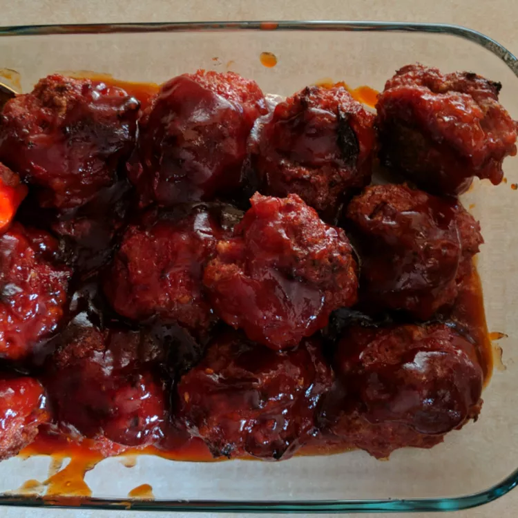

Ham Balls

The Best Ham Balls in the World
Make this delicious Ham Balls for a special occasion
or for every day if you really like ham balls
This ham ball recipe will never let you down and is super simple to make,
from pro to beginner this recipe will be your go to whenever you need that ham and ball goodness
Ingredients
- 1 ¼ kg minced meat
- 1 cup bread crumbs
- 1 ½ tablespoons black pepper
- 1 ½ teaspoons salt
- 1 egg
- 2 teaspoons yeast extract
Steps
- Step 1
Place all ingredient in to a bowl and mix well.
- Step 2
Shape in to balls about the size of golf balls.
- Step 3
Place on a sheet tray and cook at 200 degrees celsius for 20minutes.